Your tenancy.
Client data lives in your firm’s own Microsoft 365 environment.
Security & your dataBunya Command Centre
From first meeting to implemented advice. AI prepares the work. Your team approves every step.
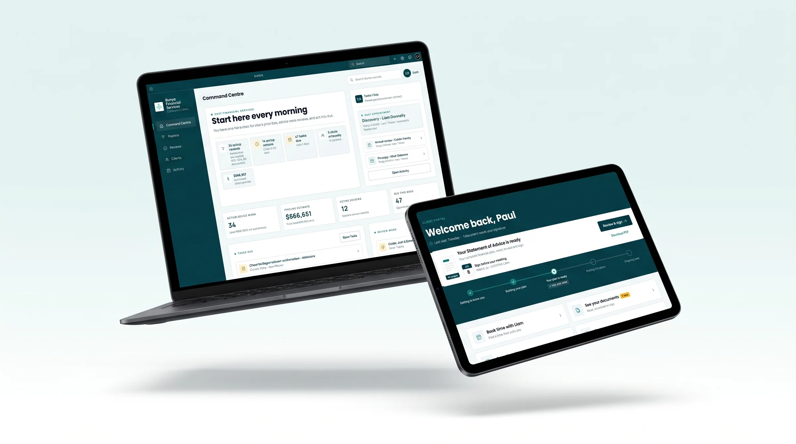
Bunya Command Centre is financial advice software for Australian advice firms. It keeps every client, every piece of advice work and every next step in one place, prepares the prework for your team to check, and runs inside your firm’s own Microsoft 365.


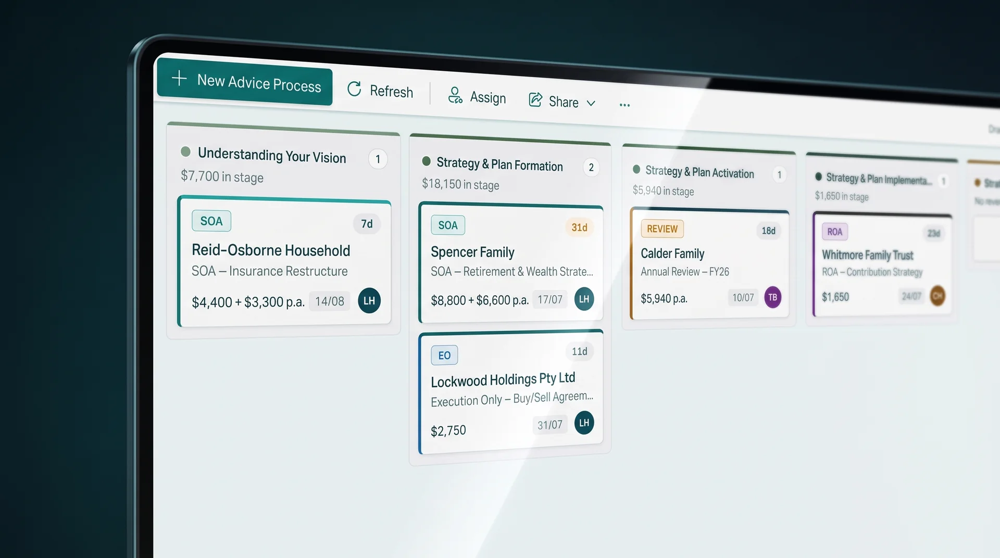
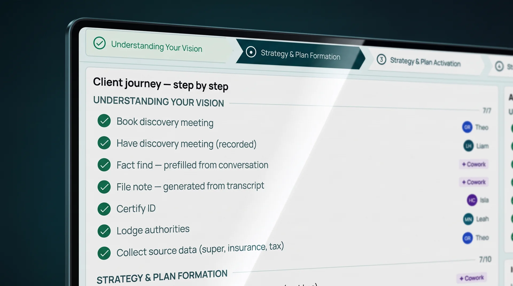
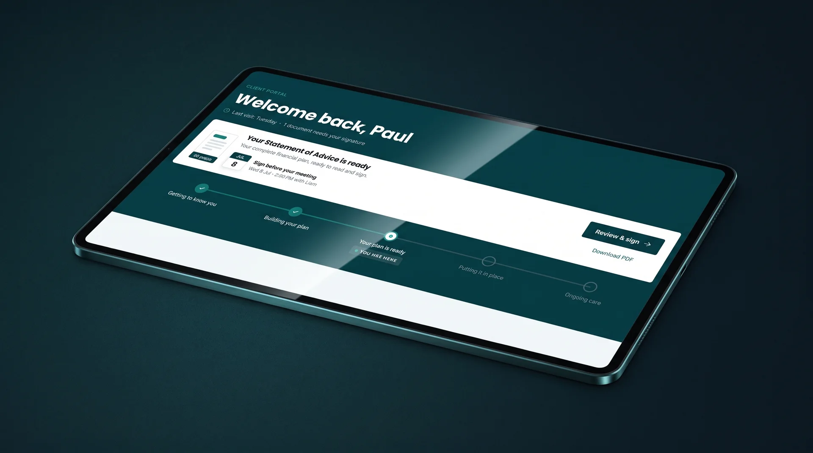
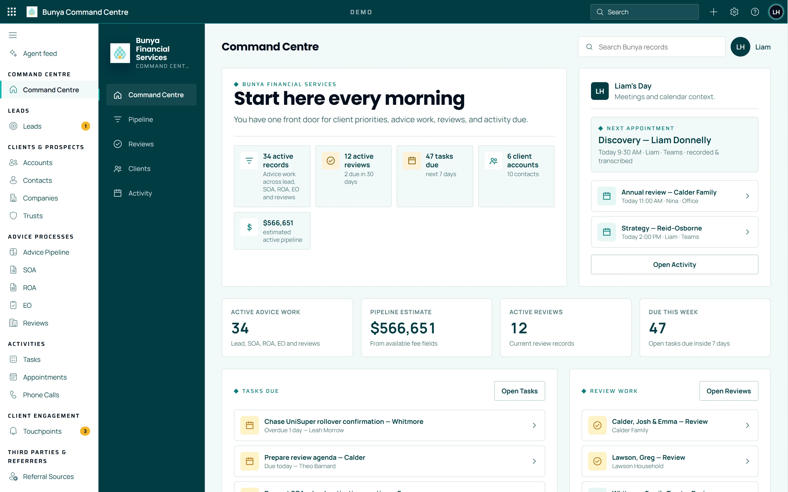
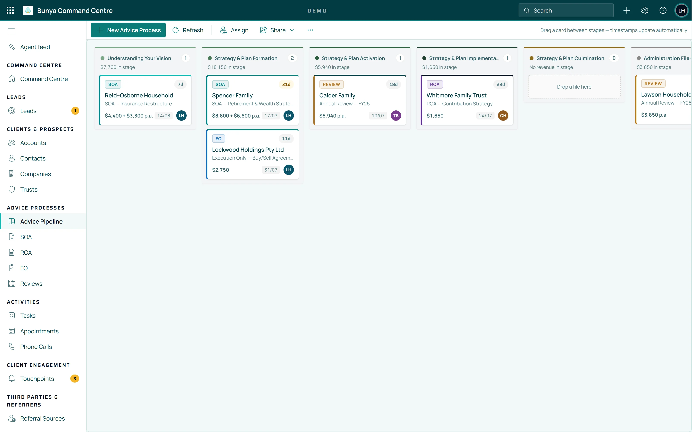
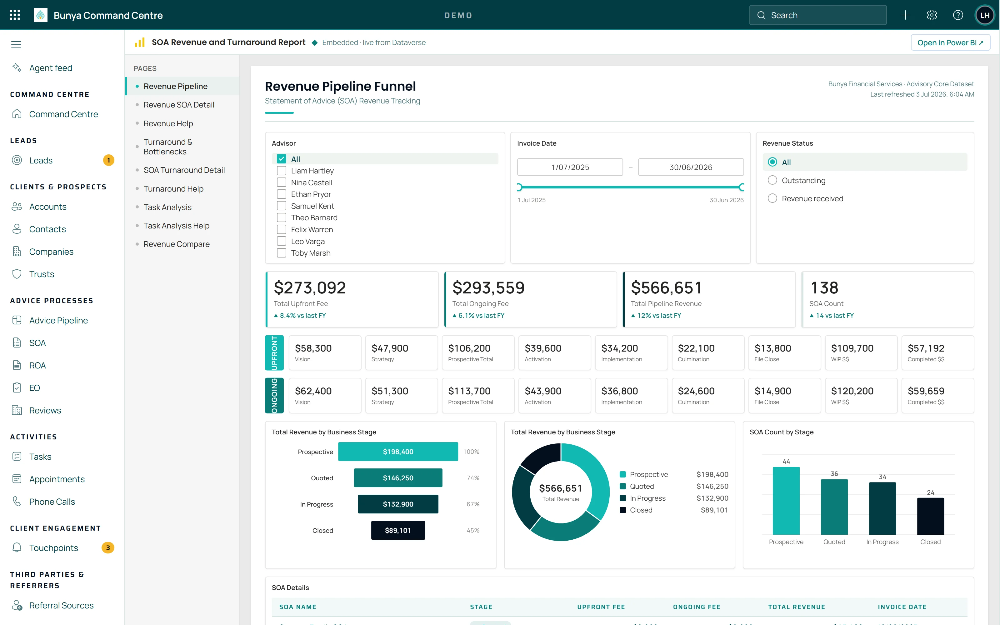
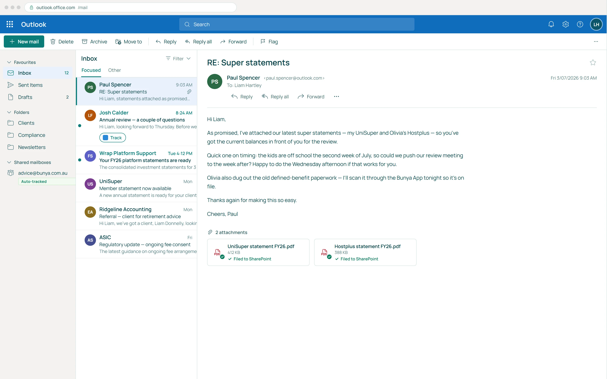
Real screens from the demo build, with example data.
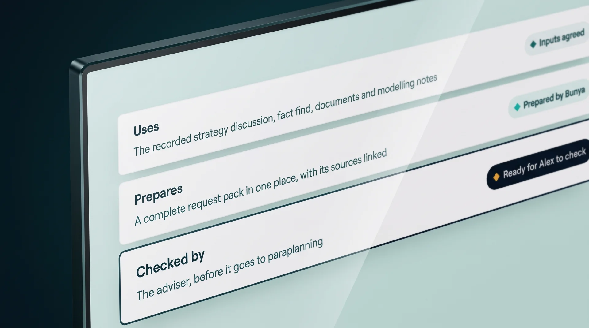
Each AI workflow states what it uses, what it prepares and who checks it. File notes, fact-find inputs and request packs arrive in your firm’s format, as drafts your team edits rather than pages they start from blank.

Everything Bunya prepares is marked as a draft, so no one mistakes it for a decision.
A named person edits it, approves it or sends it back. Nothing is used or sent until they do.
Who approved what stays with the client record, ready when someone asks.
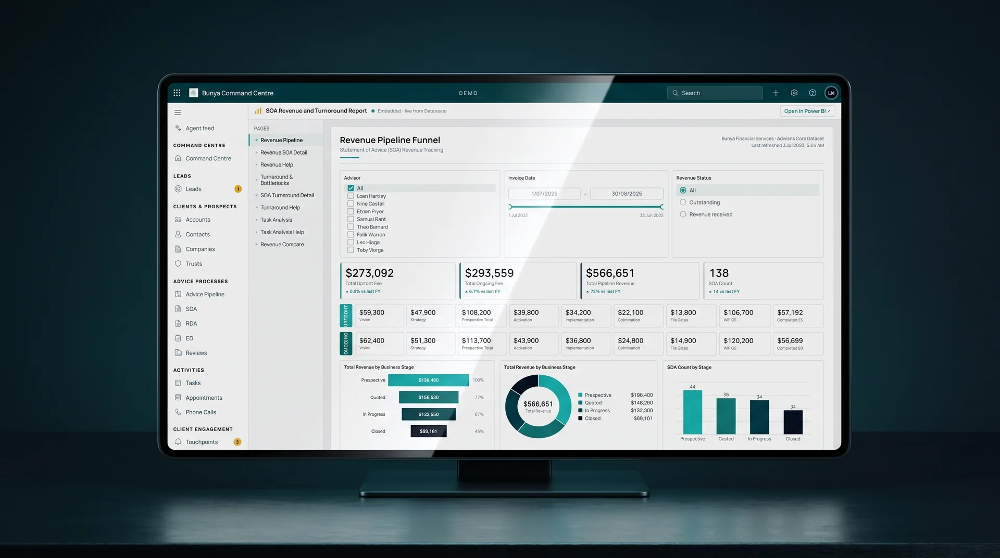
Email, meetings and documents connect to the client record, inside your firm’s own Microsoft 365. Specialist advice tools are connected by agreement, and your Blueprint sets what to keep, connect or replace.
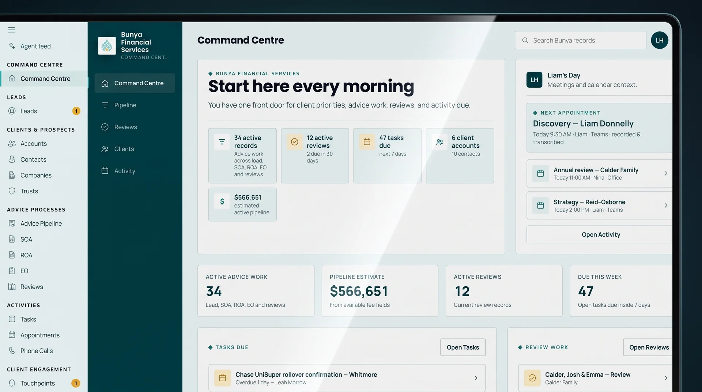
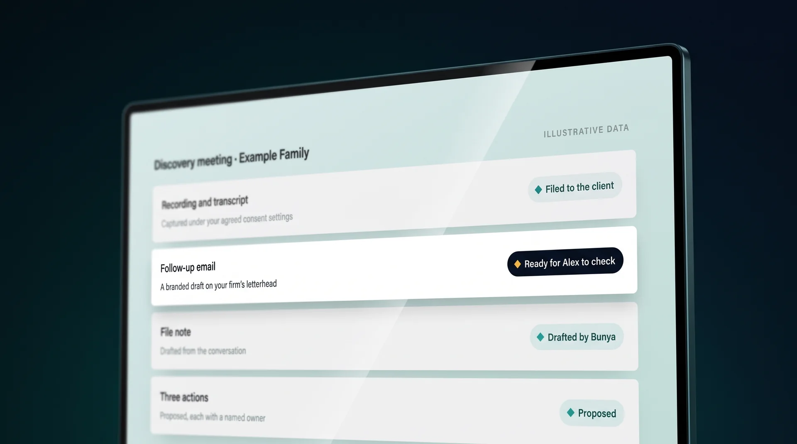
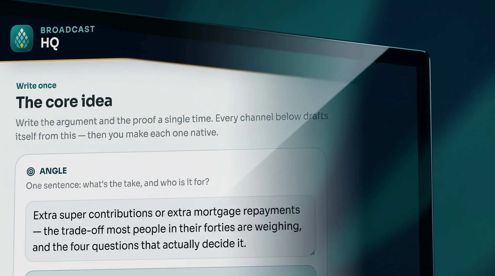
Command Centre is the core: the client record, the advice work and the next step. It delivers advice on its own.
Agents do one advice job each inside Command Centre. The File notes agent turns a call or Teams meeting into the file note, actions and a follow-up email draft to check. All agents
Apps are separate workspaces beside it. In Broadcast HQ, write an idea once, let AI draft each channel, and approve every variant before anything is published. All apps
Apps are optional. Command Centre and its agents deliver advice without them.
From first meeting to implemented advice.
From the file note to review prep.
Marketing, new business, your team, your books and your logins.
“The attraction was a practical approach tailored to financial advice, rather than automation for its own sake.”Kane LeersenOrganisation Leader & Personal Financial Adviser, Regional Prosperity Financial Advice
Client data lives in your firm’s own Microsoft 365 environment.
Security & your dataAI prepares the prework. Nothing is used or sent until a person on your team approves it.
How AI workflows workStages, roles and approval points are agreed with your team in your Blueprint, before anything is built.
Getting startedQuestions
One meeting covers the demo and how your firm works today.